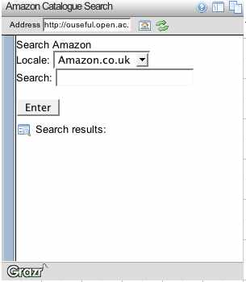
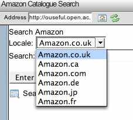
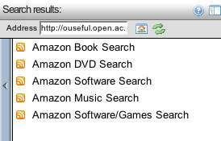
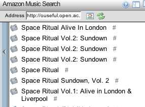
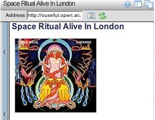
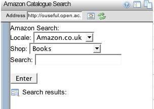
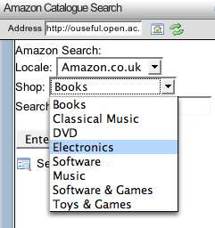
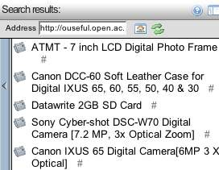
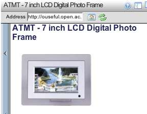

November 06, 2006
Amazon Search Widget in Grazr
One of the great things about the GrazrScript form elements is that they turn Grazr from being 'just' a feed reading and navigation widget into a platform for feed based widget development. If you can find a hackable feed URL, then you can probably do something interesting with it in Grazr :-)
So - here's my proper first effort (apart from the Hennepin County Library Catalogue search that is demoed in Stringle, of course...) - a couple of Amazon Search Widgets (I'll provide screen shots first, then embed the demos at the end of the post; I suspect this won't show up in a feedreader, so to see them you may have to click through to the full post on Feedburner or at the OUseful blog).
I actually produced two separate widgets that demonstrate the inline and outline ('federated') approaches that the current version of GrazrScript forms support.
Firstly, the 'outline' approach - a search widget that lets you search over several categories at once.
Here's the basic interface:

You can select the locale/Amazon shop by country:

When you've entered the search (in this case for "space ritual" ;-) the search is run over several different Amazon categories:

I want the music result:

Nice one :-)

Secondly - the inline approach. In this case, we are just going to pull in a single result feed. The main interface is similar to the previous one, except that now you can select the item category as well:

Here are the options I put in to start with:

Here's a search over electrical goods:

And here's the result:

Creating these widgets was easy, once I'd cobbled together an XSL stylesheet that transformed the Amazon webservice search results into RSS.
There was also a GrazrScript gotcha that got me (you can read about it on the GrazrScript forums).
Anyway - feel free to have a play, and maybe even try out one of these widgets on your own site.
Firstly, here's the multisearch widget (GrazrScript powered Amazon search widget over multiple categories):

Then the inline search (GrazrScript powered Amazon search widget):
It's easy to embed these search widgets in your own page - just follow the link(s) above and then look for the Add to your page link that Grazr kindly provides :-)
PS here's a quick way of customising a Grazr/Amazon search widget to let you 'hardwire' the locale and product type for the search. There are two buttons in the form - one uses Javascript, the other doesn't:
If the form doesn't appear in you feedreader, you can find one here: Amazon/Grazr search widget customiser
Posted by ajh59 at November 6, 2006 06:03 PM